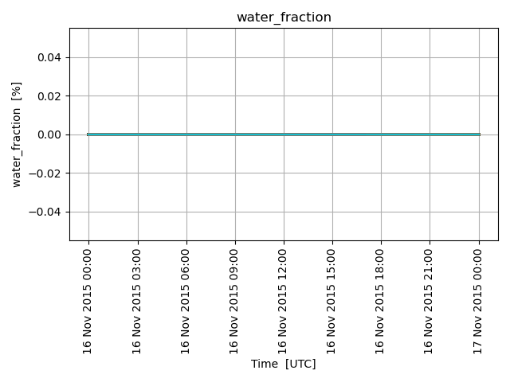
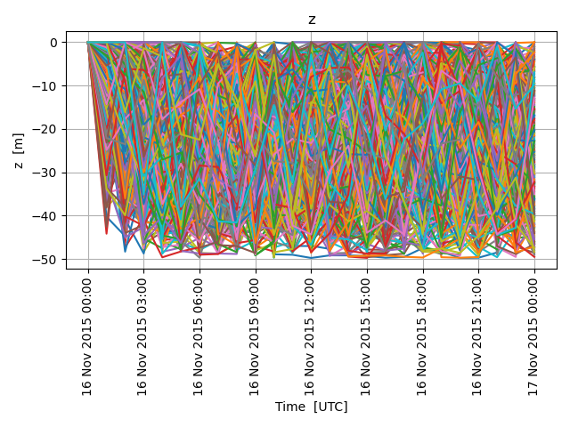

Note
Click here to download the full example code
Oil budget (NOAA)
from datetime import datetime
from opendrift.readers import reader_netCDF_CF_generic
from opendrift.models.openoil import OpenOil
o = OpenOil(loglevel=20, weathering_model='noaa')
# Using constand wind and current
#o.set_config('environment:fallback:x_wind', 7)
#o.set_config('environment:fallback:x_sea_water_velocity', .7)
#o.set_config('environment:fallback:y_sea_water_velocity', .3)
#o.set_config('environment:fallback:land_binary_mask', 0)
# Arome atmospheric model
reader_arome = reader_netCDF_CF_generic.Reader(o.test_data_folder() + '16Nov2015_NorKyst_z_surface/arome_subset_16Nov2015.nc')
# Norkyst ocean model
reader_norkyst = reader_netCDF_CF_generic.Reader(o.test_data_folder() + '16Nov2015_NorKyst_z_surface/norkyst800_subset_16Nov2015.nc')
o.add_reader([reader_arome, reader_norkyst])
Out:
12:13:32 INFO opendrift.models.basemodel: OpenDriftSimulation initialised (version 1.7.1 / v1.7.1-142-g2156ff0)
12:13:32 INFO opendrift.readers.reader_netCDF_CF_generic: Opening dataset: /root/project/tests/test_data/16Nov2015_NorKyst_z_surface/arome_subset_16Nov2015.nc
12:13:32 INFO opendrift.readers.reader_netCDF_CF_generic: Opening dataset: /root/project/tests/test_data/16Nov2015_NorKyst_z_surface/norkyst800_subset_16Nov2015.nc
Seeding some oil particles
oil_type='MARTIN LINGE CRUDE 2016'
o.seed_elements(lon=4.88, lat=60.1, z=0, radius=3000, number=500,
time=reader_norkyst.start_time, oil_type=oil_type)
Out:
querying DB:
Oil.name == 'MARTIN LINGE CRUDE 2016'
12:13:32 INFO opendrift.models.openoil: Using density 932.3495207923968 and viscosity 0.00034682540311139327 of oiltype MARTIN LINGE CRUDE 2016
Adjusting some configuration
o.set_config('processes:dispersion', False)
o.set_config('processes:evaporation', True)
o.set_config('processes:emulsification', True)
o.set_config('drift:vertical_mixing', True)
Running model
o.run(steps=4*24, time_step=900, time_step_output=3600)
Out:
12:13:32 INFO opendrift.models.basemodel: Fallback values will be used for the following variables which have no readers:
12:13:32 INFO opendrift.models.basemodel: upward_sea_water_velocity: 0.000000
12:13:32 INFO opendrift.models.basemodel: sea_surface_wave_significant_height: 0.000000
12:13:32 INFO opendrift.models.basemodel: sea_surface_wave_stokes_drift_x_velocity: 0.000000
12:13:32 INFO opendrift.models.basemodel: sea_surface_wave_stokes_drift_y_velocity: 0.000000
12:13:32 INFO opendrift.models.basemodel: sea_surface_wave_period_at_variance_spectral_density_maximum: 0.000000
12:13:32 INFO opendrift.models.basemodel: sea_surface_wave_mean_period_from_variance_spectral_density_second_frequency_moment: 0.000000
12:13:32 INFO opendrift.models.basemodel: sea_ice_area_fraction: 0.000000
12:13:32 INFO opendrift.models.basemodel: sea_ice_x_velocity: 0.000000
12:13:32 INFO opendrift.models.basemodel: sea_ice_y_velocity: 0.000000
12:13:32 INFO opendrift.models.basemodel: sea_water_temperature: 10.000000
12:13:32 INFO opendrift.models.basemodel: sea_water_salinity: 34.000000
12:13:32 INFO opendrift.models.basemodel: sea_floor_depth_below_sea_level: 10000.000000
12:13:32 INFO opendrift.models.basemodel: ocean_vertical_diffusivity: 0.020000
12:13:32 INFO opendrift.models.basemodel: ocean_mixed_layer_thickness: 50.000000
12:13:32 INFO opendrift.models.basemodel: Adding a dynamical landmask with max. priority based on assumed maximum speed of 1.3 m/s. Adding a customised landmask may be faster...
12:13:35 INFO opendrift.models.basemodel: Using existing reader for land_binary_mask
12:13:35 INFO opendrift.models.basemodel: All points are in ocean
12:13:35 INFO opendrift.models.openoil: Oil-water surface tension is 0.033691 Nm
12:13:35 INFO opendrift.models.basemodel: 2015-11-16 00:00:00 - step 1 of 96 - 500 active elements (0 deactivated)
12:13:35 INFO opendrift.models.basemodel: 2015-11-16 00:15:00 - step 2 of 96 - 500 active elements (0 deactivated)
12:13:35 INFO opendrift.models.basemodel: 2015-11-16 00:30:00 - step 3 of 96 - 500 active elements (0 deactivated)
12:13:35 INFO opendrift.models.basemodel: 2015-11-16 00:45:00 - step 4 of 96 - 500 active elements (0 deactivated)
12:13:35 INFO opendrift.models.basemodel: 2015-11-16 01:00:00 - step 5 of 96 - 500 active elements (0 deactivated)
12:13:36 INFO opendrift.models.basemodel: 2015-11-16 01:15:00 - step 6 of 96 - 500 active elements (0 deactivated)
12:13:36 INFO opendrift.models.basemodel: 2015-11-16 01:30:00 - step 7 of 96 - 500 active elements (0 deactivated)
12:13:36 INFO opendrift.models.basemodel: 2015-11-16 01:45:00 - step 8 of 96 - 500 active elements (0 deactivated)
12:13:36 INFO opendrift.models.basemodel: 2015-11-16 02:00:00 - step 9 of 96 - 500 active elements (0 deactivated)
12:13:36 INFO opendrift.models.basemodel: 2015-11-16 02:15:00 - step 10 of 96 - 500 active elements (0 deactivated)
12:13:36 INFO opendrift.models.basemodel: 2015-11-16 02:30:00 - step 11 of 96 - 500 active elements (0 deactivated)
12:13:36 INFO opendrift.models.basemodel: 2015-11-16 02:45:00 - step 12 of 96 - 500 active elements (0 deactivated)
12:13:36 INFO opendrift.models.basemodel: 2015-11-16 03:00:00 - step 13 of 96 - 500 active elements (0 deactivated)
12:13:36 INFO opendrift.models.basemodel: 2015-11-16 03:15:00 - step 14 of 96 - 500 active elements (0 deactivated)
12:13:36 INFO opendrift.models.basemodel: 2015-11-16 03:30:00 - step 15 of 96 - 500 active elements (0 deactivated)
12:13:36 INFO opendrift.models.basemodel: 2015-11-16 03:45:00 - step 16 of 96 - 500 active elements (0 deactivated)
12:13:36 INFO opendrift.models.basemodel: 2015-11-16 04:00:00 - step 17 of 96 - 500 active elements (0 deactivated)
12:13:37 INFO opendrift.models.basemodel: 2015-11-16 04:15:00 - step 18 of 96 - 500 active elements (0 deactivated)
12:13:37 INFO opendrift.models.basemodel: 2015-11-16 04:30:00 - step 19 of 96 - 500 active elements (0 deactivated)
12:13:37 INFO opendrift.models.basemodel: 2015-11-16 04:45:00 - step 20 of 96 - 500 active elements (0 deactivated)
12:13:37 WARNING opendrift.readers.basereader.structured: Data block from /root/project/tests/test_data/16Nov2015_NorKyst_z_surface/norkyst800_subset_16Nov2015.nc not large enough to cover element positions within timestep. Buffer size (8) must be increased. See `Variables.set_buffer_size`.
12:13:37 INFO opendrift.models.basemodel: 2015-11-16 05:00:00 - step 21 of 96 - 500 active elements (0 deactivated)
12:13:37 INFO opendrift.models.basemodel: 2015-11-16 05:15:00 - step 22 of 96 - 500 active elements (0 deactivated)
12:13:37 INFO opendrift.models.basemodel: 2015-11-16 05:30:00 - step 23 of 96 - 500 active elements (0 deactivated)
12:13:37 INFO opendrift.models.basemodel: 2015-11-16 05:45:00 - step 24 of 96 - 500 active elements (0 deactivated)
12:13:37 WARNING opendrift.readers.basereader.structured: Data block from /root/project/tests/test_data/16Nov2015_NorKyst_z_surface/arome_subset_16Nov2015.nc not large enough to cover element positions within timestep. Buffer size (4) must be increased. See `Variables.set_buffer_size`.
12:13:37 WARNING opendrift.readers.basereader.structured: Data block from /root/project/tests/test_data/16Nov2015_NorKyst_z_surface/norkyst800_subset_16Nov2015.nc not large enough to cover element positions within timestep. Buffer size (8) must be increased. See `Variables.set_buffer_size`.
12:13:37 INFO opendrift.models.basemodel: 2015-11-16 06:00:00 - step 25 of 96 - 500 active elements (0 deactivated)
12:13:37 INFO opendrift.models.basemodel: 2015-11-16 06:15:00 - step 26 of 96 - 500 active elements (0 deactivated)
12:13:37 INFO opendrift.models.basemodel: 2015-11-16 06:30:00 - step 27 of 96 - 500 active elements (0 deactivated)
12:13:37 INFO opendrift.models.basemodel: 2015-11-16 06:45:00 - step 28 of 96 - 500 active elements (0 deactivated)
12:13:37 INFO opendrift.models.basemodel: 2015-11-16 07:00:00 - step 29 of 96 - 500 active elements (0 deactivated)
12:13:37 INFO opendrift.models.basemodel: 2015-11-16 07:15:00 - step 30 of 96 - 500 active elements (0 deactivated)
12:13:38 INFO opendrift.models.basemodel: 2015-11-16 07:30:00 - step 31 of 96 - 500 active elements (0 deactivated)
12:13:38 INFO opendrift.models.basemodel: 2015-11-16 07:45:00 - step 32 of 96 - 500 active elements (0 deactivated)
12:13:38 INFO opendrift.models.basemodel: 2015-11-16 08:00:00 - step 33 of 96 - 500 active elements (0 deactivated)
12:13:38 INFO opendrift.models.basemodel: 2015-11-16 08:15:00 - step 34 of 96 - 500 active elements (0 deactivated)
12:13:38 INFO opendrift.models.basemodel: 2015-11-16 08:30:00 - step 35 of 96 - 500 active elements (0 deactivated)
12:13:38 INFO opendrift.models.basemodel: 2015-11-16 08:45:00 - step 36 of 96 - 500 active elements (0 deactivated)
12:13:38 INFO opendrift.models.basemodel: 2015-11-16 09:00:00 - step 37 of 96 - 500 active elements (0 deactivated)
12:13:38 INFO opendrift.models.basemodel: 2015-11-16 09:15:00 - step 38 of 96 - 500 active elements (0 deactivated)
12:13:38 INFO opendrift.models.basemodel: 2015-11-16 09:30:00 - step 39 of 96 - 500 active elements (0 deactivated)
12:13:38 INFO opendrift.models.basemodel: 2015-11-16 09:45:00 - step 40 of 96 - 500 active elements (0 deactivated)
12:13:38 WARNING opendrift.readers.basereader.structured: Data block from /root/project/tests/test_data/16Nov2015_NorKyst_z_surface/norkyst800_subset_16Nov2015.nc not large enough to cover element positions within timestep. Buffer size (8) must be increased. See `Variables.set_buffer_size`.
12:13:38 INFO opendrift.models.basemodel: 2015-11-16 10:00:00 - step 41 of 96 - 500 active elements (0 deactivated)
12:13:38 INFO opendrift.models.basemodel: 2015-11-16 10:15:00 - step 42 of 96 - 500 active elements (0 deactivated)
12:13:38 INFO opendrift.models.basemodel: 2015-11-16 10:30:00 - step 43 of 96 - 500 active elements (0 deactivated)
12:13:39 INFO opendrift.models.basemodel: 2015-11-16 10:45:00 - step 44 of 96 - 500 active elements (0 deactivated)
12:13:39 WARNING opendrift.readers.basereader.structured: Data block from /root/project/tests/test_data/16Nov2015_NorKyst_z_surface/arome_subset_16Nov2015.nc not large enough to cover element positions within timestep. Buffer size (4) must be increased. See `Variables.set_buffer_size`.
12:13:39 WARNING opendrift.readers.basereader.structured: Data block from /root/project/tests/test_data/16Nov2015_NorKyst_z_surface/norkyst800_subset_16Nov2015.nc not large enough to cover element positions within timestep. Buffer size (8) must be increased. See `Variables.set_buffer_size`.
12:13:39 INFO opendrift.models.basemodel: 2015-11-16 11:00:00 - step 45 of 96 - 500 active elements (0 deactivated)
12:13:39 INFO opendrift.models.basemodel: 2015-11-16 11:15:00 - step 46 of 96 - 500 active elements (0 deactivated)
12:13:39 INFO opendrift.models.basemodel: 2015-11-16 11:30:00 - step 47 of 96 - 500 active elements (0 deactivated)
12:13:39 WARNING opendrift.readers.basereader.structured: Data block from /root/project/tests/test_data/16Nov2015_NorKyst_z_surface/norkyst800_subset_16Nov2015.nc not large enough to cover element positions within timestep. Buffer size (8) must be increased. See `Variables.set_buffer_size`.
12:13:39 INFO opendrift.models.basemodel: 2015-11-16 11:45:00 - step 48 of 96 - 500 active elements (0 deactivated)
12:13:39 WARNING opendrift.readers.basereader.structured: Data block from /root/project/tests/test_data/16Nov2015_NorKyst_z_surface/arome_subset_16Nov2015.nc not large enough to cover element positions within timestep. Buffer size (4) must be increased. See `Variables.set_buffer_size`.
12:13:39 WARNING opendrift.readers.basereader.structured: Data block from /root/project/tests/test_data/16Nov2015_NorKyst_z_surface/norkyst800_subset_16Nov2015.nc not large enough to cover element positions within timestep. Buffer size (8) must be increased. See `Variables.set_buffer_size`.
12:13:39 INFO opendrift.models.basemodel: 2015-11-16 12:00:00 - step 49 of 96 - 500 active elements (0 deactivated)
12:13:39 INFO opendrift.models.basemodel: 2015-11-16 12:15:00 - step 50 of 96 - 500 active elements (0 deactivated)
12:13:39 INFO opendrift.models.basemodel: 2015-11-16 12:30:00 - step 51 of 96 - 500 active elements (0 deactivated)
12:13:39 INFO opendrift.models.basemodel: 2015-11-16 12:45:00 - step 52 of 96 - 500 active elements (0 deactivated)
12:13:39 WARNING opendrift.readers.basereader.structured: Data block from /root/project/tests/test_data/16Nov2015_NorKyst_z_surface/norkyst800_subset_16Nov2015.nc not large enough to cover element positions within timestep. Buffer size (8) must be increased. See `Variables.set_buffer_size`.
12:13:39 INFO opendrift.models.basemodel: 2015-11-16 13:00:00 - step 53 of 96 - 500 active elements (0 deactivated)
12:13:39 INFO opendrift.models.basemodel: 2015-11-16 13:15:00 - step 54 of 96 - 500 active elements (0 deactivated)
12:13:39 INFO opendrift.models.basemodel: 2015-11-16 13:30:00 - step 55 of 96 - 500 active elements (0 deactivated)
12:13:40 INFO opendrift.models.basemodel: 2015-11-16 13:45:00 - step 56 of 96 - 500 active elements (0 deactivated)
12:13:40 INFO opendrift.models.basemodel: 2015-11-16 14:00:00 - step 57 of 96 - 500 active elements (0 deactivated)
12:13:40 INFO opendrift.models.basemodel: 2015-11-16 14:15:00 - step 58 of 96 - 500 active elements (0 deactivated)
12:13:40 INFO opendrift.models.basemodel: 2015-11-16 14:30:00 - step 59 of 96 - 497 active elements (3 deactivated)
12:13:40 INFO opendrift.models.basemodel: 2015-11-16 14:45:00 - step 60 of 96 - 494 active elements (6 deactivated)
12:13:40 INFO opendrift.models.basemodel: 2015-11-16 15:00:00 - step 61 of 96 - 490 active elements (10 deactivated)
12:13:40 INFO opendrift.models.basemodel: 2015-11-16 15:15:00 - step 62 of 96 - 490 active elements (10 deactivated)
12:13:40 INFO opendrift.models.basemodel: 2015-11-16 15:30:00 - step 63 of 96 - 488 active elements (12 deactivated)
12:13:40 INFO opendrift.models.basemodel: 2015-11-16 15:45:00 - step 64 of 96 - 487 active elements (13 deactivated)
12:13:40 INFO opendrift.models.basemodel: 2015-11-16 16:00:00 - step 65 of 96 - 486 active elements (14 deactivated)
12:13:40 INFO opendrift.models.basemodel: 2015-11-16 16:15:00 - step 66 of 96 - 482 active elements (18 deactivated)
12:13:40 INFO opendrift.models.basemodel: 2015-11-16 16:30:00 - step 67 of 96 - 480 active elements (20 deactivated)
12:13:41 INFO opendrift.models.basemodel: 2015-11-16 16:45:00 - step 68 of 96 - 475 active elements (25 deactivated)
12:13:41 INFO opendrift.models.basemodel: 2015-11-16 17:00:00 - step 69 of 96 - 471 active elements (29 deactivated)
12:13:41 INFO opendrift.models.basemodel: 2015-11-16 17:15:00 - step 70 of 96 - 467 active elements (33 deactivated)
12:13:41 INFO opendrift.models.basemodel: 2015-11-16 17:30:00 - step 71 of 96 - 460 active elements (40 deactivated)
12:13:41 INFO opendrift.models.basemodel: 2015-11-16 17:45:00 - step 72 of 96 - 454 active elements (46 deactivated)
12:13:41 INFO opendrift.models.basemodel: 2015-11-16 18:00:00 - step 73 of 96 - 446 active elements (54 deactivated)
12:13:41 INFO opendrift.models.basemodel: 2015-11-16 18:15:00 - step 74 of 96 - 437 active elements (63 deactivated)
12:13:41 INFO opendrift.models.basemodel: 2015-11-16 18:30:00 - step 75 of 96 - 426 active elements (74 deactivated)
12:13:41 INFO opendrift.models.basemodel: 2015-11-16 18:45:00 - step 76 of 96 - 420 active elements (80 deactivated)
12:13:41 INFO opendrift.models.basemodel: 2015-11-16 19:00:00 - step 77 of 96 - 411 active elements (89 deactivated)
12:13:41 INFO opendrift.models.basemodel: 2015-11-16 19:15:00 - step 78 of 96 - 404 active elements (96 deactivated)
12:13:41 INFO opendrift.models.basemodel: 2015-11-16 19:30:00 - step 79 of 96 - 397 active elements (103 deactivated)
12:13:42 INFO opendrift.models.basemodel: 2015-11-16 19:45:00 - step 80 of 96 - 392 active elements (108 deactivated)
12:13:42 INFO opendrift.models.basemodel: 2015-11-16 20:00:00 - step 81 of 96 - 387 active elements (113 deactivated)
12:13:42 INFO opendrift.models.basemodel: 2015-11-16 20:15:00 - step 82 of 96 - 385 active elements (115 deactivated)
12:13:42 INFO opendrift.models.basemodel: 2015-11-16 20:30:00 - step 83 of 96 - 380 active elements (120 deactivated)
12:13:42 INFO opendrift.models.basemodel: 2015-11-16 20:45:00 - step 84 of 96 - 377 active elements (123 deactivated)
12:13:42 WARNING opendrift.readers.basereader.structured: Data block from /root/project/tests/test_data/16Nov2015_NorKyst_z_surface/arome_subset_16Nov2015.nc not large enough to cover element positions within timestep. Buffer size (4) must be increased. See `Variables.set_buffer_size`.
12:13:42 INFO opendrift.models.basemodel: 2015-11-16 21:00:00 - step 85 of 96 - 373 active elements (127 deactivated)
12:13:42 INFO opendrift.models.basemodel: 2015-11-16 21:15:00 - step 86 of 96 - 368 active elements (132 deactivated)
12:13:42 INFO opendrift.models.basemodel: 2015-11-16 21:30:00 - step 87 of 96 - 361 active elements (139 deactivated)
12:13:42 INFO opendrift.models.basemodel: 2015-11-16 21:45:00 - step 88 of 96 - 359 active elements (141 deactivated)
12:13:42 WARNING opendrift.readers.basereader.structured: Data block from /root/project/tests/test_data/16Nov2015_NorKyst_z_surface/norkyst800_subset_16Nov2015.nc not large enough to cover element positions within timestep. Buffer size (8) must be increased. See `Variables.set_buffer_size`.
12:13:42 INFO opendrift.models.basemodel: 2015-11-16 22:00:00 - step 89 of 96 - 348 active elements (152 deactivated)
12:13:43 INFO opendrift.models.basemodel: 2015-11-16 22:15:00 - step 90 of 96 - 341 active elements (159 deactivated)
12:13:43 INFO opendrift.models.basemodel: 2015-11-16 22:30:00 - step 91 of 96 - 332 active elements (168 deactivated)
12:13:43 INFO opendrift.models.basemodel: 2015-11-16 22:45:00 - step 92 of 96 - 326 active elements (174 deactivated)
12:13:43 WARNING opendrift.readers.basereader.structured: Data block from /root/project/tests/test_data/16Nov2015_NorKyst_z_surface/arome_subset_16Nov2015.nc not large enough to cover element positions within timestep. Buffer size (4) must be increased. See `Variables.set_buffer_size`.
12:13:43 WARNING opendrift.readers.basereader.structured: Data block from /root/project/tests/test_data/16Nov2015_NorKyst_z_surface/norkyst800_subset_16Nov2015.nc not large enough to cover element positions within timestep. Buffer size (8) must be increased. See `Variables.set_buffer_size`.
12:13:43 INFO opendrift.models.basemodel: 2015-11-16 23:00:00 - step 93 of 96 - 324 active elements (176 deactivated)
12:13:43 INFO opendrift.models.basemodel: 2015-11-16 23:15:00 - step 94 of 96 - 316 active elements (184 deactivated)
12:13:43 INFO opendrift.models.basemodel: 2015-11-16 23:30:00 - step 95 of 96 - 307 active elements (193 deactivated)
12:13:43 INFO opendrift.models.basemodel: 2015-11-16 23:45:00 - step 96 of 96 - 305 active elements (195 deactivated)
12:13:43 WARNING opendrift.readers.basereader.structured: Data block from /root/project/tests/test_data/16Nov2015_NorKyst_z_surface/norkyst800_subset_16Nov2015.nc not large enough to cover element positions within timestep. Buffer size (8) must be increased. See `Variables.set_buffer_size`.
Print and plot results
o.plot_oil_budget()
o.plot(fast=True)
o.animation(fast=True)
#o.plot_oil_budget('oil_budget_MartinLingeCrude.png')


Out:
12:13:44 WARNING opendrift.models.basemodel: Plotting fast. This will make your plots less accurate.
12:13:52 WARNING opendrift.models.basemodel: Plotting fast. This will make your plots less accurate.
12:13:59 INFO opendrift.models.basemodel: Saving animation to /root/project/docs/source/gallery/animations/example_oil_budget_noaa_0.gif...
12:13:59 INFO opendrift.models.basemodel: Making animated gif...
MovieWriter imagemagick unavailable; using Pillow instead.
o.plot_property('fraction_evaporated')
o.plot_property('density')
o.plot_property('water_fraction')
o.plot_property('viscosity')
o.plot_property('interfacial_area')
o.plot_property('z')


- 


- 
Total running time of the script: ( 0 minutes 36.484 seconds)